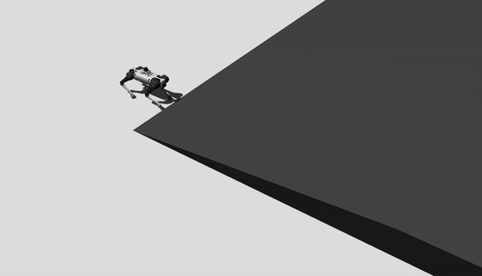
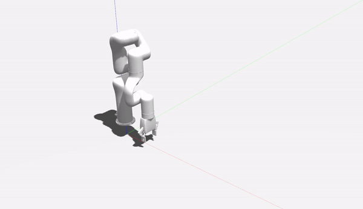
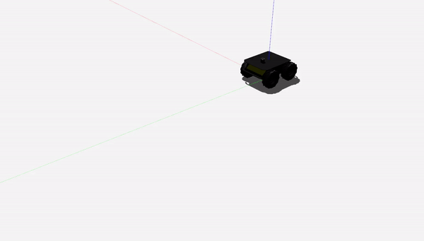

Property-Based Testing: Formalized Robotic Testing for Standard Compliance’s documentation!
  {kind=link}
{kind=link}
{kind=link}
This is the documentation for the code used in the revised property-based testing framework.
Important
The revised property-based testing framework can be found in the Github repository.
property_based_tester.configuration package
Submodules
property_based_tester.configuration.config module
Provides miscellaneous utility functions.
- class property_based_tester.configuration.config.Configuration[source]
Bases:
objectIt extracts information from the property-based-tester parameter yaml file for controller information.
- property_based_tester.configuration.config.bound_box(model_name)[source]
Generates bounding box for a given model.
- property_based_tester.configuration.config.choices(population, weights=None, *, cum_weights=None, k=1)[source]
Return a k sized list of population elements chosen with replacement. If the relative weights or cumulative weights are not specified, the selections are made with equal probability.
- property_based_tester.configuration.config.collision_checker(model, x, y, z, model_tracer)[source]
Checks the collision with all other dynamic models. Uses Axis-Aligned Bounding Box.
- Parameters
obj_small_x (float) – Model’s bounding box minimum x coordinate.
obj_big_x (float) – Model’s bounding box maximum x coordinate.
obj_small_y (float) – Model’s bounding box minimum y coordinate.
obj_big_y (float) – Model’s bounding box maximum y coordinate.
- Returns
- Returns True if there is no valid position for given model.
Returns False if there is a valid position for given model.
- Return type
bool
- property_based_tester.configuration.config.find_mins_maxs(obj)[source]
This extracts the minimum and maximum value of the meshes boundaries.
- Parameters
obj –
class.obj – A class object obtained from the numpy-stl library. The
function. (functionality is directly tied to the mesh_extracto) –
- Returns
minx, maxx, miny, maxy, minz, maxz float: The values of the cartesian coordinate.
Module contents
property_based_tester.properties package
Submodules
property_based_tester.properties.composite_properties module
Composite Properties: Culmination of composite properties that can used.
- class property_based_tester.properties.composite_properties.CompositeProperties[source]
Bases:
object- must_be_at(object='jackal_robot', target_area_min=[- 2, - 2, - 2], target_area_max=[1, 2, 2], time=0, tolerance=0)[source]
- Composite property that ensures the robot is in its given operation zone througout the
a given scenario.
- Parameters
target_area_min (list, optional) – minimum coordinates of the bounding zone. Defaults to [-2,-2,-2].
target_area_max (list, optional) – maximum coordinates of the bounding zone. Defaults to [1, 2, 2].
time (int, optional) – time to check the entity (currently not implemented). Defaults to 0.
tolerance (int, optional) – Safety tolerance value that robot shouldn’t exceed. Defaults to 0.
- Returns
Returns True if the robot stayed inside the operation zone.
- Return type
Bool
- must_be_near_to(object='jackal_robot', target_object='convex_5cm', req_dis=6, tolerance=0)[source]
Composite property that checks whether the robot is in a given square vicnity.
- Parameters
object (str, optional) – The main entity to check the euclidean distance to other object. Defaults to ‘jackal_robot’.
target_object (str, optional) – The entity against which the euclidean distance is measured. Defaults to ‘convex_5cm’.
req_dis (int, optional) – The minimum distance required between the entities. Defaults to 6.
tolerance (int, optional) – +/- values for required distance. Defaults to 0.
- Returns
Returns True if the main entity is near to the target entity.
- Return type
Bool
- must_collide(robot, object, robot_position=[0, 2, 0], target_area_min=[- 1, - 1, 0], target_area_max=[2, 2, 0], time=0, tolerance=0)[source]
Composite property that checks for collision of the robot using axis aligned bounding box method.
- Parameters
robot (str) – The robot
object (str) – The entity to check against
robot_position (list, optional) – Robots current position. Defaults to [0,2,0].
target_area_min (list, optional) – Entities bounding box size minimum coordinates. Defaults to [-1,-1,0].
target_area_max (list, optional) – Entities bounding box size maximum coordinates. Defaults to [2,2,0].
time (int, optional) – Time to check at. Defaults to 0.
tolerance (int, optional) – Allowable tolerance. Defaults to 0.
- Returns
Returns True if the robot collided with target entity.
- Return type
Bool
- must_have_collision_force_less_than(forces_applied: float, threshhold: float)[source]
Composite property that checks the collision force of a robot with an entity. It requires a collision sensor.
- Parameters
forces_applied (float) – The maximum allowable force.
threshhold (float) – Allowable tolerance.
- Returns
Returns True if the robot collided with target entity.
- Return type
Bool
- must_have_orientation(object='jackal_robot_issac', orientation=[25, 25, 360], time=0, tolerance=0)[source]
Composite property that ensures the object is in the correct orientation.
- Parameters
orientation (list, optional) – the orientation of the target entity. Defaults to [25, 25, 360].
time (int, optional) – specific time step to check orientation of the entity. Defaults to 0.
tolerance (int, optional) – Extra safety tolerance value that robot shouldn’t exceed. Defaults to 0.
- Returns
Returns True if the object orientation was correct.
- Return type
Bool
- must_not_be_at(object='jackal_robot', target_area_min=[2, 2, - 1], target_area_max=[6, 6, 2], time=0, tolerance=0)[source]
- Composite property that ensures the robot does not wander into a forbidden zone througout the
a given scenario.
- Parameters
target_area_min (list, optional) – minimum coordinates of the bounding zone. Defaults to [2, 2, -1].
target_area_max (list, optional) – maximum coordinates of the bounding zone. Defaults to [6, 6, 2].
time (int, optional) – time to check the entity (currently not implemented). Defaults to 0.
tolerance (int, optional) – Safety tolerance value that robot shouldn’t exceed. Defaults to 0.
- Returns
Returns True if the robot did not go into a forbidden zone.
- Return type
Bool
- must_not_be_near_to(object='jackal_robot', target_object='convex_5cm', req_dis=6, tolerance=0)[source]
Composite property that checks whether the robot is not in a given square vicnity.
- Parameters
object (str, optional) – The main entity to check the euclidean distance to other object. Defaults to ‘jackal_robot’.
target_object (str, optional) – The entity against which the euclidean distance is measured. Defaults to ‘convex_5cm’.
req_dis (int, optional) – The minimum distance required between the entities. Defaults to 6.
tolerance (int, optional) – +/- values for required distance. Defaults to 0.
- Returns
Returns True if the main entity is not near to the target entity.
- Return type
Bool
- must_not_collide(robot, object)[source]
Composite property that checks for collision of the robot using axis aligned bounding box method.
- Parameters
robot (str) – The robot
object (str) – The entity to check against
robot_position (list, optional) – Robots current position. Defaults to [0,2,0].
target_area_min (list, optional) – Entities bounding box size minimum coordinates. Defaults to [-1,-1,0].
target_area_max (list, optional) – Entities bounding box size maximum coordinates. Defaults to [2,2,0].
time (int, optional) – Time to check at. Defaults to 0.
tolerance (int, optional) – Allowable tolerance. Defaults to 0.
- Returns
Returns True if the robot did not collide with target entity.
- Return type
Bool
property_based_tester.properties.primitive_properties module
Primitive properties: Processes spatial and temporal information logged during scenario execution.
- class property_based_tester.properties.primitive_properties.PrimitiveProperties[source]
Bases:
object- physical_information()[source]
Extracts the physical information of the robot such as inertia from the urdf.
- quaternion_to_euler_angle_vectorized2(w, x, y, z)[source]
Converts Quaternions to Euler angles.
- Parameters
w (float) – Quaternion 1
x (float) – Quaternion 2
y (float) – Quaternion 3
z (float) – Quaternion 4
- Returns
Roll, Pitch, Yaw
- Return type
float
- robo_spatial_temporal_information(object)[source]
Extracts spatial information of the robotduring the entire scenario. Position is based on the 0,0 world frame of gazebo.
- Parameters
object (str) – Robot name for information extraction.
- Returns
All information of the logged data during scenario exectuion.
- Return type
Numpy Matrix
- spatial_temporal_information(object)[source]
Extracts spatial information during the entire scenario. Position is based on the 0,0 world frame of gazebo.
- Parameters
object (str) – Target entity for information extraction.
- Returns
All information of the logged data during scenario exectuion.
- Return type
Numpy Matrix
Module contents
property_based_tester.property_based_language_generation package
Submodules
property_based_tester.property_based_language_generation.textx_test_specification module
Property-Based Language Generator: A domain specific language based on textX for mapping usecases into tests via natural language.
- class property_based_tester.property_based_language_generation.textx_test_specification.PropertyBasedLanguageGenerator[source]
Bases:
objectPre-processing of the test definitions for user tests as well as standard tests.
- scenario_composite_test_extractor(scenario, composite_tests)[source]
Pre-processing in which the composite properties are parsed and flagged with their test types from the inputted test definitions.
- Parameters
scenario (list) – The scenario designated in the test definition file.
composite_tests (list) – The composite properties designate in the test definition file.
- Returns
Scenario Definition (list), Composite Properties (list)
- Return type
tuple
- class property_based_tester.property_based_language_generation.textx_test_specification.PropertyBasedLanguageGeneratorRandomizer[source]
Bases:
objectPre-processing of the test definitions for randomized tests.
- random_scenario_generation()[source]
Pre-processing in which the the randomized scenario modifiers from the test definitions are extracted and returned.
- Returns
Randomized scenario modifiers
- Return type
list
- scenario_composite_test_extractor(scenario, composite_tests)[source]
Pre-processing in which the composite properties are parsed and flagged with their test types from the inputted test definitions.
- Parameters
scenario (list) – The scenario designated in the test definition file.
composite_tests (list) – The composite properties designate in the test definition file.
- Returns
Scenario Definition (list), Composite Properties (list)
- Return type
tuple
Module contents
property_based_tester.robot_controllers package
Submodules
property_based_tester.robot_controllers.experimental_pick_place_client module
Experimental pick, place client Toyota HSR: The client activates the pick and place action based on the default Toyota HSR client.
- property_based_tester.robot_controllers.experimental_pick_place_client.MoveItPickAndPlace(pick_x=0, pick_y=0, pick_z=0, place_x=0, place_y=0, place_z=0)[source]
Provides cartesian goal commands to the Toyota HSR to perform pick and place actions in the map frame
- Parameters
pick_x (int, optional) – x-coordinates for pick action. Defaults to 0.
pick_y (int, optional) – y-coordinates for pick action. Defaults to 0.
pick_z (int, optional) – z-coordinates for pick action. Defaults to 0.
place_x (int, optional) – x-coordinates for place action. Defaults to 0.
place_y (int, optional) – y-coordinates for place action. Defaults to 0.
place_z (int, optional) – z-coordinates for place action. Defaults to 0.
property_based_tester.robot_controllers.perceive_client module
Perceive client: The client activates the perceive action based on the updated MDR module.
property_based_tester.robot_controllers.pick_Toyota_client module
Pick and place sample by Yoshimi_yoda: Copyright (C) 2017 Toyota Motor Corporation
- class property_based_tester.robot_controllers.pick_Toyota_client.MoveItPickAndPlace(pick_x=0, pick_y=0, pick_z=0, place_x=0, place_y=0, place_z=0, wait=0.0)[source]
Bases:
objectUsing built in moveit commander for pick and place tasks for the Toyota HSR.
- Parameters
object (class) – Inherited class from moveit commander
property_based_tester.robot_controllers.pick_client module
Pick client: The client activates the pick action based on the MDR client.
- property_based_tester.robot_controllers.pick_client.picker_client(x, y, z, R, P, Y)[source]
Iitialized pick action for the Toyota HSR using the MDR repository of MAS.
- Parameters
x (float) – x-coordinates for pick action
y (float) – y-coordinates for pick action
z (float) – z-coordinates for pick action
R (float) – r-orientation for pick action
P (float) – p-orientation for pick action
Y (float) – y-orientation for pick action
- Returns
Returns True if action commands were successful.
- Return type
bool
property_based_tester.robot_controllers.pick_place_client module
Pick and place modified sample by Yoshimi_yoda Copyright (C) 2017 Toyota Motor Corporation
property_based_tester.robot_controllers.place_client module
Place client: The client activates the MDR place action module.
- property_based_tester.robot_controllers.place_client.placer_client(x, y, z, R, P, Y)[source]
Initialized place action for the Toyota HSR using the MDR repository of MAS.
- Parameters
x (float) – x-coordinates for place action
y (float) – y-coordinates for place action
z (float) – z-coordinates for place action
R (float) – r-orientation for place action
P (float) – p-orientation for place action
Y (float) – y-orientation for place action
- Returns
Returns True if action commands were successful.
- Return type
bool
property_based_tester.robot_controllers.speed_client module
Movement Client: The client activates the provides raw command velocity to mobile robots.
- property_based_tester.robot_controllers.speed_client.move(speed=1, cmd_vel_topic='/cmd_vel', timeout=5)[source]
Utilizes a ROS publiser to provide raw command velocities in a given topic to move a mobile robot.
- Parameters
speed (int, optional) – The value of speed that the robot should move with. Defaults to 1.
cmd_vel_topic (str, optional) – The receiving topic by which the robot moves. Defaults to ‘/cmd_vel’.
timeout (int, optional) – The amount of time to publish. Defaults to 5.
- Returns
Returns True if publishing was successful.
- Return type
bool
property_based_tester.robot_controllers.xarm_moveit module
Moveit Client: The client that provides goal for the robotic arms in this case being xARM6.
- class property_based_tester.robot_controllers.xarm_moveit.ManipulatorMoveit(manipulator_group_name)[source]
Bases:
object
- property_based_tester.robot_controllers.xarm_moveit.all_close(goal, actual, tolerance)[source]
Convenience method for testing if a list of values are within a tolerance of their counterparts in another list @param: goal A list of floats, a Pose or a PoseStamped @param: actual A list of floats, a Pose or a PoseStamped @param: tolerance A float @returns: bool
Module contents
property_based_tester.scen_gen package
Submodules
property_based_tester.scen_gen.force_generation module
Obstacle Generator: Generates obstacles and gathers worlds properties.
- property_based_tester.scen_gen.force_generation.apply_force(x=0, y=0, z=0, link='base_link', timeout=10, randomized=False)[source]
Applies a randomized force to a target entity in the Gazebo simulator.
- Parameters
x (int, optional) – The force to be applied in the x-axis. Defaults to 0.
y (int, optional) – The force to be applied in the y-axis. Defaults to 15.
z (int, optional) – The force to be applied in the z-axis. Defaults to 0.
link (str, optional) – The target link for applying the force. Defaults to ‘base_link’.
timeout (int, optional) – The amount of time to apply the force. Defaults to 10.
randomized (bool, optional) – Whether the force should be randomized. Defaults to False.
property_based_tester.scen_gen.model_placement module
Model Placement: Static and dynamic model placement in the Gazebo simulator.
- property_based_tester.scen_gen.model_placement.delete_model(model_name)[source]
This function deletes a model in the gazebo world by passing a roscommand from the terminal.
- Parameters
model_name (str) – Name of the object and the object ID to be deleted.
property_based_tester.scen_gen.obstacle_gen module
Obstacle Generator: Generates obstacles and collects worlds properties.
- class property_based_tester.scen_gen.obstacle_gen.Model(model_real_name, x=0, y=0, z=0, R=0, P=0, Y=0)[source]
Bases:
objectThis class contains all relevant information of a gazebo model.
- delete_model(model_name)[source]
This function deletes a model in the gazebo world by passing a roscommand from the terminal.
- Parameters
model_name (str) – Name of the object and the object ID to be deleted.
property_based_tester.scen_gen.random_scenario_generator module
Random Scenario Generator (RSG): The RSG generates unique and altered poses for the models that will be place within the worlds of Gazebo simulator according to the required scenarios.
- class property_based_tester.scen_gen.random_scenario_generator.Model(model_real_name, x=0, y=0, z=0, R=0, P=0, Y=0)[source]
Bases:
objectThis class contains all relevant information of a gazebo model.
- delete_model(model_name)[source]
This function deletes a model in the gazebo world by passing a roscommand from the terminal.
- Parameters
model_name (str) – Name of the object and the object ID to be deleted.
property_based_tester.scen_gen.robot_placement module
Robot Placement: Spawns the mobile robot/robotic arm in the Gazebo simulator.
property_based_tester.scen_gen.world_prop module
World properties: Extracts information of the gazebo world.
Module contents
property_based_tester.temporal_cache package
Submodules
property_based_tester.temporal_cache.data_depot module
Data Depot: Logs the temporal properties of the models.
- property_based_tester.temporal_cache.data_depot.data_logger(df, loc)[source]
Writes data into a csv file.
- Parameters
loc (str) – file path.
- property_based_tester.temporal_cache.data_depot.data_reader(loc)[source]
Reads .csv files and returns two data frames, one is all the models and their positions.
- Parameters
loc (str) – code name for calling the log file
- Returns
Position and orientation of all the models.
- Return type
df_1 data_frame
- property_based_tester.temporal_cache.data_depot.log_hsrb_reader()[source]
Extracts the robots location
- Returns
returns the x y z quat1 quat2 quat3 quat4
- Return type
list
- property_based_tester.temporal_cache.data_depot.log_reader_comparator(loc, action_start, action_end)[source]
Reads nav files for testing purposes.
- Parameters
loc (str) – the column to be compared in testing
action (str) – the filename of the action test e.g. nav_start, nav_end
- Returns
- Returns 2 numbers which are the difference in the log file,
note the robot change in position in not taken into consideration.
- Return type
int
- property_based_tester.temporal_cache.data_depot.lucy_gripper_information()[source]
Extracts the gripper information
- Returns
returns the x y z quat1 quat2 quat3 quat4
- Return type
list
property_based_tester.temporal_cache.temporal_log module
Temporal Logger: Logs the temporal properties of the scenario entities in a csv file.